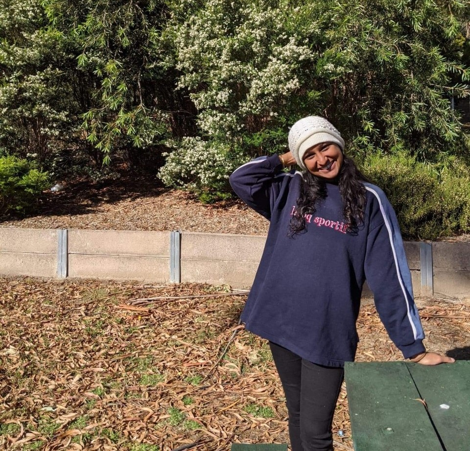
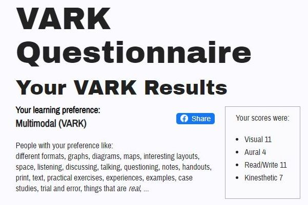
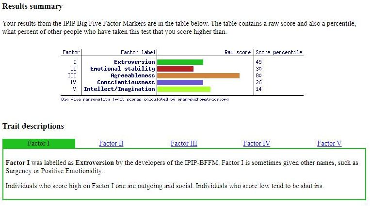

Natanya de Silva | s3488872 | s3488872@student.rmit.edu.au
I’m 25 years old, from Melbourne, where I’ve been living nearly all my life. I was born in Sri Lanka in 1996 and immigrated here with my family just before my fourth birthday, in January 2000. After graduating high school in 2013, I went on to study a Bachelor of Fashion Design at RMIT for two years. Following this, I worked on and off over the next four years, funding long- and short-term travel to various countries across parts of Europe, Asia and the Pacific. Namely in that time, I backpacked various parts of Western and Central Europe for 4 months; lived in and travelled around Sri Lanka for ~5 months; and voluntarily worked in mission as a teacher in Cambodia, also for 5 months. It was through these travels that I was able to pick up a few different languages and rediscover my love of, and for, learning languages. The two that I am more fluent in (but out of practice in, now!) are Sinhalese and Khmer – Sri Lanka’s and Cambodia’s national languages, respectively. My passions are travel, fashion, photography, singing, design, and social psychology (yes, including self-help books!). I’m also passionate about the environment, international aid, and volunteering where I can in these areas!
I’ve always believed in gaining a vast array of life experiences and exploring different subjects that caught my interest, no matter the field – this was one of the driving factors that lead me to study a degree in IT. My brother was always the IT expert in my family and had a natural flair for it, which he diligently followed to a successful career in CS/IT. I never considered IT as I had always leaned more toward mathematics or the creative fields. Whilst I loved numbers, I had little interest in conventional science subjects like physics, chemistry and biology; which at the time I considered essential if I were to pursue a career in maths, understanding they often went hand-in-hand. I also enjoyed subjects of a creative nature, and so went on to explore my proclivity for this, through a degree in fashion design. It was here that I soon discovered, however, that whilst I enjoyed the creative side of things, I was not as stimulated by this kind of work; and ultimately it was not something I desired as a career. I realised I wanted something more logical and straight-forward, interesting – something I enjoyed and was good at, or at least could expand upon from within my current skillset – and, latterly, something stable.
In the years following my leave from fashion, I explored all sorts of areas – photography, admin work, teaching, community and international development through volunteering, even the idea of starting my own business… These pursuits (and my experiences in them), as well as my realised affinity for tech and logic, lead me to explore the IT field. IT gives me the chance to combine my love of numbers and logic whilst also applying it in a real and tangible way. It also holds the potential for me to explore any artistic facets. Being a growing field, I found it an ideal sector to enter, and especially given the current climate: it is one that’s here to stay.
I chose to study at RMIT mostly because of my familiarity with the university due to my previous studies in fashion design and a short course in photography, but also for its reputation and based off my knowledge of the experiences of those family and friends in the CSIT field who went before me. My decision to study the Bachelor of IT was affirmed after speaking to a friend who graduated from the program and is now a UX designer. I also love the city campus location and overall student experience that RMIT offers, as well as its clubs, activities, student support, opportunities, global experiences, and access to the vast professional network and connections built over the years.
During my studies, I expect to gain both a general understanding of the different areas I can work in in IT once I graduate, and the skillset that goes with it, and of course the opportunity to specialise in and explore certain areas that draw my interest, like cloud-computing and cybersecurity. I’d also like to get involved in clubs like SWITCH, speak to industry professionals, and explore IT job opportunities/internships available to me through RMIT’s CareerHub and Job Shop.
Glassdoor, 2021
This advertisement for a graduate cloud-computing engineer position through FDM Group – a recruitment and training company – allows graduates to gain two years of work experience after graduating, working for clients in Singapore in an entry-level cloud-computing role. Training, skills development and mentoring is also provided during the two years through FDM’s graduate program. A cloud-computing engineer is responsible for all stages of the cloud system – designing, planning, managing, and maintaining (Gargaro, D., 2021). The role would involve helping clients move to a cloud-based system, where each step would be overseen by the consultant, and at other times, helping fix issues in businesses’ existing cloud systems.
This position appeals to me mostly because it allows me to start working in cloud-computing as soon as I graduate, getting my foot in the door and allowing me to work my way in and up from there. Although I am not quite sure yet if an engineering role would suit me, a role similar to this in cloud-computing would assist me in gaining the necessary experience to work in the sector. I appreciate that this role doesn’t require any prior work experience or qualification beyond degree level, as I currently don’t have any plans for further study after graduation/after graduation/following graduation/upon graduating, and ideally would like to get straight into the workforce. The Singapore location also makes this position my ideal job, as it is a dream of mine to live and work there, having travelled there already, and I know there are good opportunities available there within the IT sector. The recruitment company itself is rated well (Glassdoor, 2021) and it seems to have good connections to large organisations/clients. The estimated salary for an entry-level role in cloud-engineering is also attractive, with employees being able to earn up to AUD$88,000+/year (Salary Expert, 2021); granted, this figure is for those in an entry-level job with 1-3 years’ experience and would vary between countries (current estimate is based on Australian salaries only) – but still a good ballpark figure to keep in mind.
Beyond a Bachelor’s degree qualification in what I’m assuming would be Computer Science or Information Technology, this role also requires an excellent command of English, both verbal and written skills – these especially important when liaising with clients. Analytical and interpersonal skills are also necessary, as well as the ability to make decisions under pressure. Curiosity, passion, and particularly drive are also important for success in this role.
My current skills include: good communication skills, both written and verbal, as well as good interpersonal skills which allow me to establish positive and egalitarian relationships with those around me. These have been developed from my experience working with people of all ages, personality types, and backgrounds, both in paid jobs and in my varied volunteer roles. I have developed customer service skills through working in different sales assistant and admin roles.
I would need to undertake the Security and Cloud Computing stream within the BP162 program in order to be qualified for this position. Furthermore, an internship would be a valuable asset that I could undertake in my second or third year. It would also be beneficial for me to gain experience second-hand by speaking with or even interviewing fellow peers through peer-mentoring (CSIT students in their second and third years), and network with industry professionals through RMIT clubs, events and services. My verbal communication skills could be improved upon particularly in terms of my confidence by practicing speaking in front of crowds (such as by asking questions in my classes/lectorials; speaking up in groups). Lastly, I hope my analytical and problem-solving skills will be improved upon throughout this course and as I continue programming.
www.16personalities.com, 2021
vark-learn.com, 2021
openpsychometrics.org, 2021
The result of the Myers-Briggs personality test feels accurate and I feel understood, but it also draws my attention to what I need to be conscious about and what holds me back. In terms of personality traits, my ‘nature’ and ‘identity’ tend to make me follow my emotions more than I would like, making me prone to stress, and - as I’ve always been aware - a perfectionist and an all-or-nothing type. The Vark test felt more vague to me as I find it difficult to identify with and pinpoint my learning style(s). I felt unsure about which of the responses I really resonated with, if any, throughout the test. The result being that my learning preference is multimodal is therefore accurate but I’m not quite sure what that means for me – it leaves me feeling a bit uneasy. The Big Five personality test results confirm similar underlying traits and issues from the Myers-Briggs test. In particular, my agreeableness is very much related to my confidence and discomfort in expressing my true thoughts and feelings. I’ve also always felt like I don’t have much of an imagination, but whether this is actually true or not, the test could not measure – as it interestingly seems to measure your perceived imagination rather than the imagination itself (or lack thereof), so am not sure what to make of this aspect.
These results may make me hesitant to speak up in a team and express my thoughts/ideas, but I think it will be easy for me to get along well with my teammates. As for my perfectionism, it usually causes me to procrastinate when working on my own, so I need to be aware of this also when other people are depending on me. Imagination might be where I struggle most in contributing original and interesting ideas, as I don’t feel wired that way. My interpretation of these results is however biased and I am aware there may be a number of things I have not recognised from these results – either positive or negative – that may influence my behaviour in a team.
When forming a team, it would be great to team up with people who see the ‘big picture’, to counteract my tendency to focus too much on the details, and which can often hold me and potentially the team back. It would also be good to have confident, outspoken individuals in my team, but whom would also allow and consider others in the group to express their ideas/thoughts.